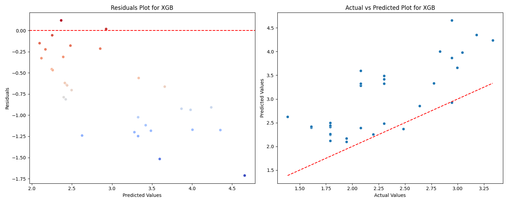
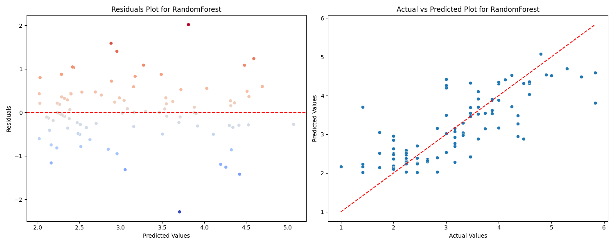
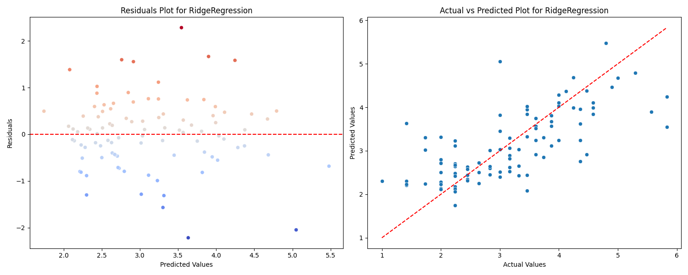

Model Performance
Best Model
XGBoost
Lowest RMSE across all models
Training RMSE
0.647
On holdout test set (80/20 split)
Unseen Data RMSE
0.854
2023–2024 season (32 teams)
Generalization Gap
+0.207
RMSE increase on new season data
Training Seasons
15
2008–2009 through 2022–2023
Features Used
4
Age, MP, PKatt, CrdY
Historical Trends & Model Comparison
Total Goals by Season
Aggregate goals scored across all teams · 2008–2023
Model RMSE Comparison
Lower is better · Trained on sqrt-transformed goals
Model Metrics Detail
| Model | MAE | MSE | RMSE | RMSE Bar |
|---|---|---|---|---|
| XGBoost Best | 0.499 | 0.418 | 0.647 | |
| Random Forest | 0.497 | 0.453 | 0.673 | |
| Lasso Regression | 0.565 | 0.568 | 0.754 | |
| Linear Regression | 0.566 | 0.571 | 0.756 | |
| Ridge Regression | 0.566 | 0.571 | 0.756 |
2023–2024 Season Analysis
Team Goals — 2023/24 Season
Total goals scored per team in UCL group stage & knockout rounds
Feature Importance (XGBoost)
Relative contribution of each feature to goal prediction
Scoring the Model — Unseen 2023/24 Data
Summary of Results
From notebook 3_score_model · XGBoost evaluated on 32 teams never seen during training
The original XGBoost model performed best on training data with an RMSE of 0.647. On the new 2023–24 season data the RMSE rose to 0.854 — higher than all models tested during training. This increase is likely due to the training data lacking a robust set of features, causing the model to not generalize well on new data. To improve, more features can be collected and the model retrained. Different model architectures can also be explored to improve generalization.
Unseen MAE
0.729
Unseen MSE
0.729
Unseen RMSE
0.854
Top 5 Closest Predictions
log(Goals) · Teams where model was most accurate · Blue = actual · Teal = predicted
Residuals by Team (Actual − Predicted)
Negative = model overpredicted · Positive = model underpredicted
Model Diagnostics — Residual Plots

XGBoost — Best performer (RMSE 0.647)

Random Forest — 2nd best (RMSE 0.673)
Lasso Regression (RMSE 0.754)
Linear Regression (RMSE 0.756)

Ridge Regression (RMSE 0.756)